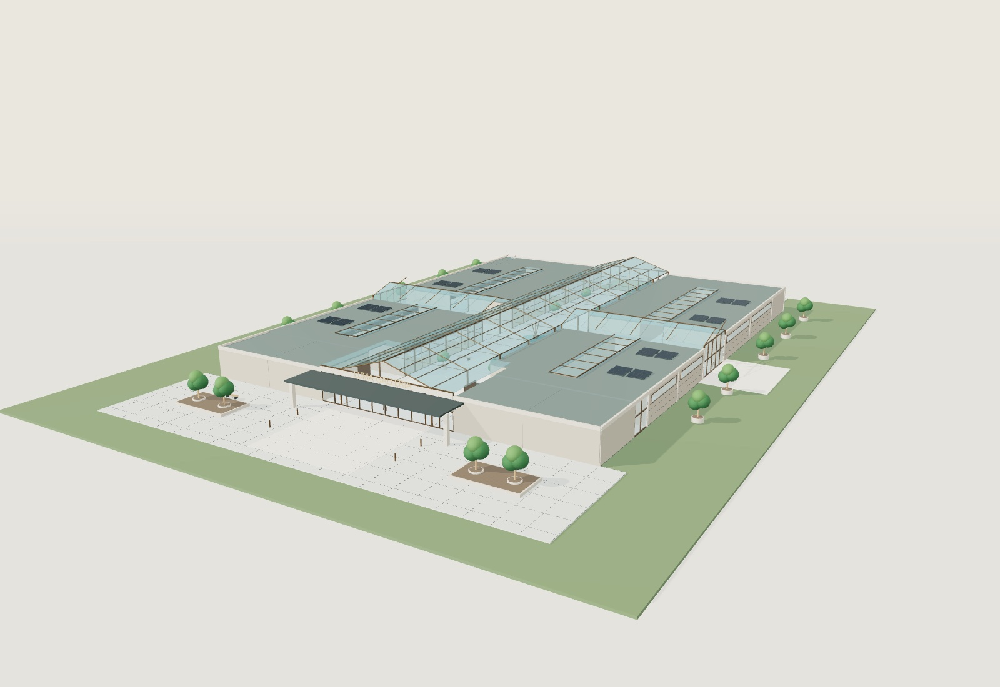
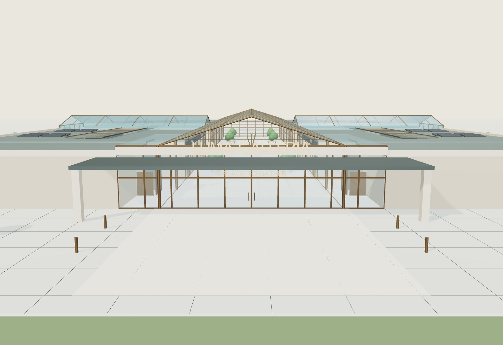
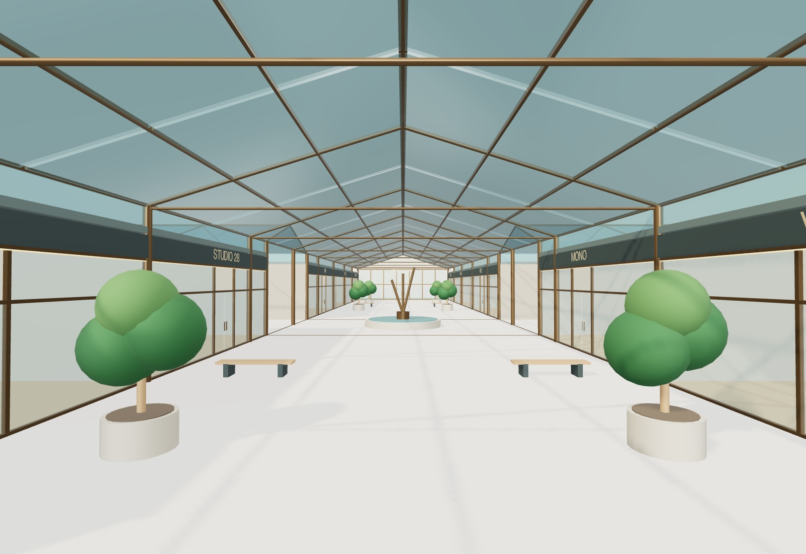
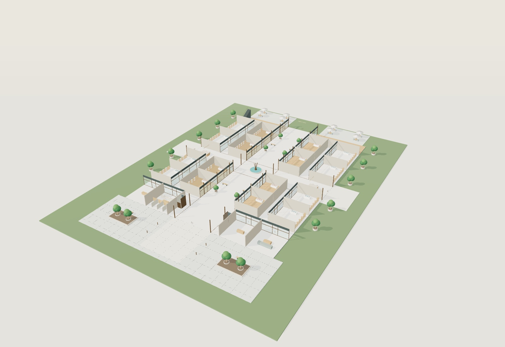
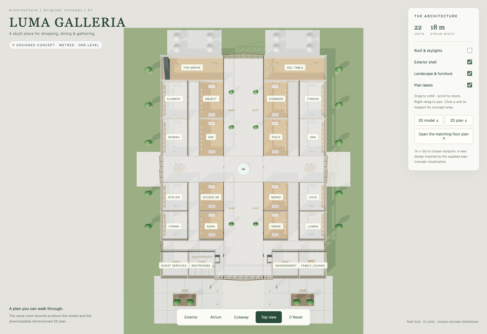
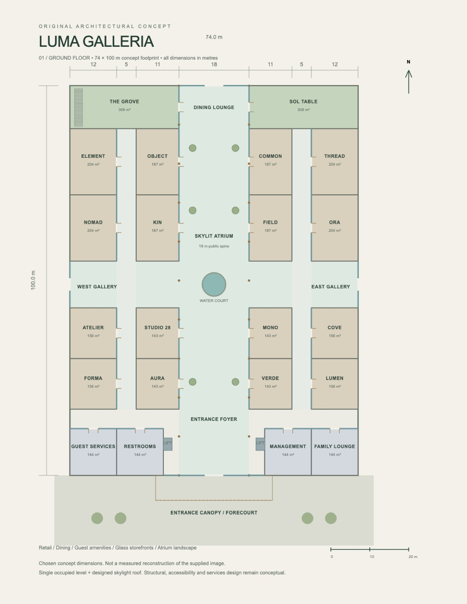

3D / Architectural Design
Luma Galleria
An original mall architecture study with an editable 3D model, matching 2D plan, actual model renders and an optional rotatable viewer.

Independent portfolio project
Design and implementation
Muhammad Mukhtar Zikirullahi · 2026
3D / Architectural Design
The approach
A 74 × 100 m concept footprint organizes 22 units around a glazed atrium and cross gallery. Limestone, bronze framing, timber fit-outs, transparent shopfronts, a gabled glass roof and a landscaped arrival plaza form a coherent model and plan.
What was verified
The exported GLB was loaded and its bounds, materials and roof meshes checked. Roof, shell and furniture toggles, view presets and the matching floor plan were exercised.
Scope and honest limits
A self-initiated architectural visualization, not a website project or certified construction package. Dimensions are chosen design values; structural, fire, accessibility and building-services engineering are not provided.
No client commission, user-research findings or commercial outcomes are claimed.
Actual model renders and matching plan
Architecture beyond the screen.









